Takao-san,
March 14, 2004
(organised by Nicolas and Sveta)
Photos by Nicolas and Ginny and report by Sveta and
Nicolas
|
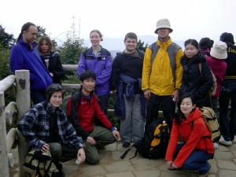 |
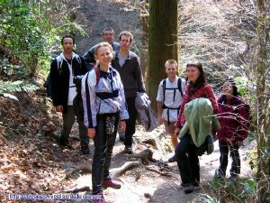 |
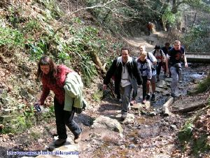 |
| |
The hikers |
|
|
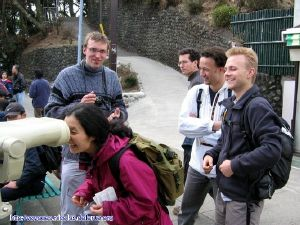 |
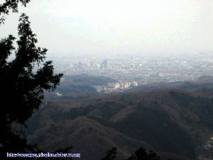 |
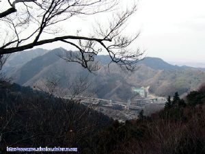 |
| |
views from
above |
|
|
The
Fire Ceremony |
|
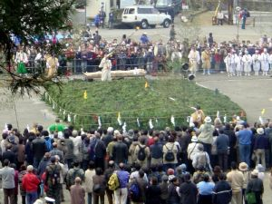 |
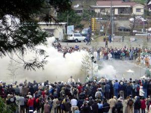 |
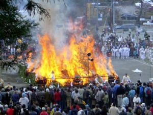 |
|
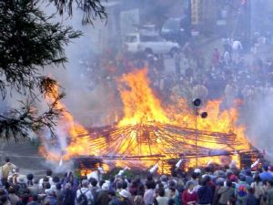 |
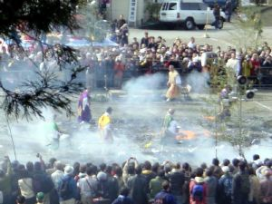 |
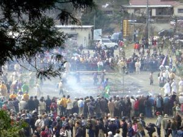 |
|
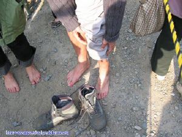 |
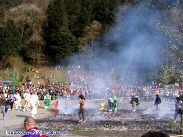 |
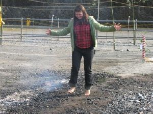 |
|
and
finally our hikers had chance to walk the fire and be purified |
|
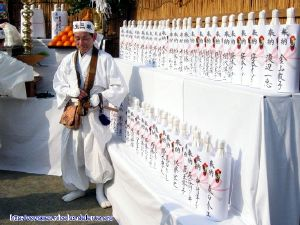 |
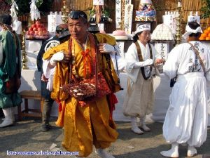 |
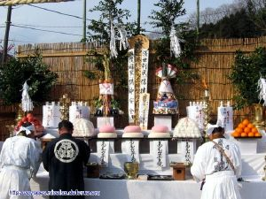 |
| |
|
|
|
and the end of
an eventful day... |
Report by Sveta and Nicholas
Everybody came in time at 7/11 last
sunday so we were able to leave in
advance. Some more people joined us in
the train and in Tokyo, so in
total we were 25+/-0.2 people to reach
Takao-san.
There we split into two groups, one group
of fast hikers (8 people) and a
group for those who preferred to have
more time to enjoy the path (17
people).
The fast hikers group reached the summit
after 1 hour, around 11am,
then we decided to go to the next summit
(Shiro-san?). We had to hurry a
bit if we wanted to be in time at the
Fire festival, but this did not
prevent us from enjoying the views
We were back in time (1pm) at the temple
where we expected the ceremony to
be held... But in fact the ceremony was
held at the foot of the mountain,
so we had to go down further.
We missed to the beginning of the
ceremony, but there were still many
people waiting to walk on the fire when
we arrived.
And after a long wait we could also walk
on the fire.
Back to the
Home Page